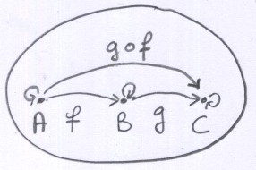
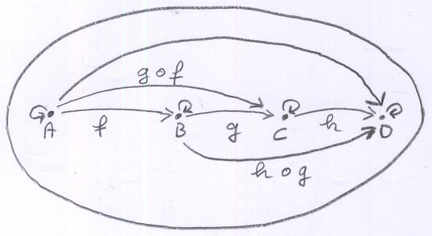

Sujets rapidement abordés, liés au cours mais hors-programme.
- Go
-
Maths
Catégories, schémas, topos, motifs, fondations univalentes.
Bourbaki Grothendieck Voïevodski. - Graph databases, rdf, sparql, gremlins, semantic web, dbpedia, yago, aspect sémantique de html5.
-
Event sourcing, CQRS.
http://www.cqrs.nu/
https://www.youtube.com/watch?v=m9tXT_q5odA
https://msdn.microsoft.com/en-us/library/jj591573.aspx
Catégories
C'est un sujet central en informatique.On a l'habitude de travailler avec les ensembles. On fait plein de choses avec des notions très simples : union, intersection, inclusion, appartenance, cardinal (nombre d'éléments dans un ensemble). L'union et l'intersection nous donnent les opérateurs "et" et "ou", le produit de deux ensembles nous permet de définir des relations entre deux ensembles, donc de définir des fonctions, etc.
Dans les ensembles, on travaille avec des éléments, et on décrit les propriétés de nos structures avec ça.
Dans une catégorie, on a des objets et des flèches qui vont d'un objet à l'autre. Une flèche exprime une relation entre deux objets.
A priori, une catégorie est un graphe orienté : les objets sont les sommets et les flèches sont les arêtes.
Mais pour qu'un graphe orienté mérite le nom de catégorie, les flèches doivent vérifier certaines propriétés :
-
Identité : Tout objet doit avoir une flèche qui part de cet objet et arrive à cet objet sans rien changer.
On noteidAl'indentité de A. -
Composition : s'il existe une flèche de A vers B et une flèche de B vers C, alors il doit exister une flèche qui va directement de A à C.
Aller de A à B puis de B à C revient exactement au même que d'aller directement de A à C.  La flèche qui va directement de A à C s'appelle la composée de f et de g.
On noteg ( f ) = g ∘ fg∘fse prononce " g rond f ". Cette notation n'est pas intuitive car elle est à l'envers, mais elle est logique, car on appliquegau résultat def.
On pourrait dire " g après f " à la place de " g rond f ". -
Associativité : le chemin parcouru ne change pas le résultat.

h ∘ (g ∘ f) = (h ∘ g) ∘ f
La flèche qui va directement de A à D peut donc s'écrireh ∘ g ∘ f, sans les parenthèses.
On peut tout de suite imaginer que le fait d'avoir des flèches en plus des objets permet de représenter tout un tas de phénomènes de manière naturelle.
Dans la théorie des ensembles, les structures qu'on étudie et leurs comportements sont exprimés en utilisant les éléments.
Dans la théorie des catégories, on travaille avec les flèches.
La catégorie la plus familière à étudier est la catégorie des ensembles, notée
Set ou Ens. Dans cette catégorie, les objets sont des ensembles et les flèches sont des relations entre les ensembles.
Cette catégorie permet de modéliser un langage informatique.
Un type de donnée est représenté par un ensemble dont les éléments sont les valeurs que peut prendre ce type.
Ce sont des ensembles finis ou infinis :
| Type | Ensemble | N : cardinal de l'ensemble |
|---|---|---|
| Boolean | true, false | 2 |
| Char | 'a', 'b', ... | 128 |
| Integer | 1, 2, 3 ... | ∞ infini |
| Real | 0.0001, 0.0002 ... | ∞ infini |
| String | "", "a", "aa" ... | ∞ infini |
On définit donc une catégorie des types. Les objets sont les types de données, et les flèches des fonctions qui transforment un type en un autre.
Les flèches définissent des fonctions qui prennent un type en paramètre et renvoient un type.
// char --> boolean
boolean isVoyelle(char c){ }
En pratique, les fonctions ne sont pas aussi simples : elles peuvent avoir plusieurs paramètres, générer des exceptions, avoir des effets de bord (I/O, modification de variables globales) ... mais toutes ces complexités peuvent être construites à partir de ces fonctions pures à un seul paramètre.
La catégorie des types fournit donc une représentation mathématique d'un langage fonctionnel.
Pour plus de détails, voir larzac.info/maths/categories/milewski